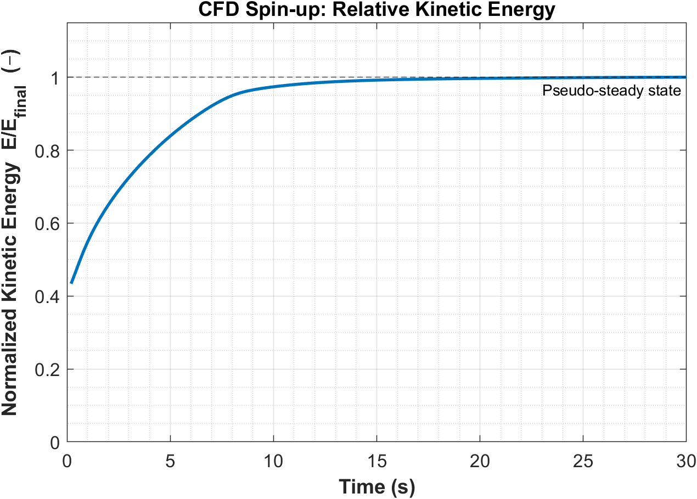
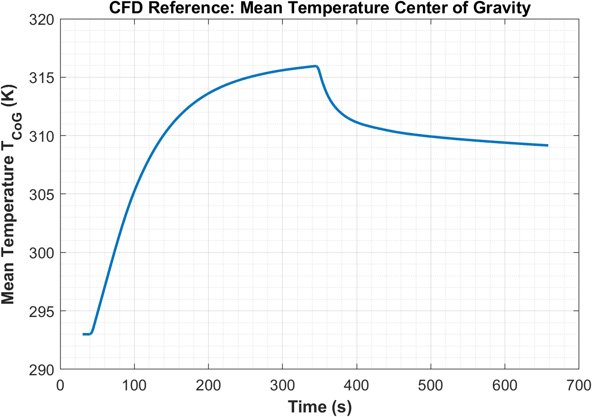
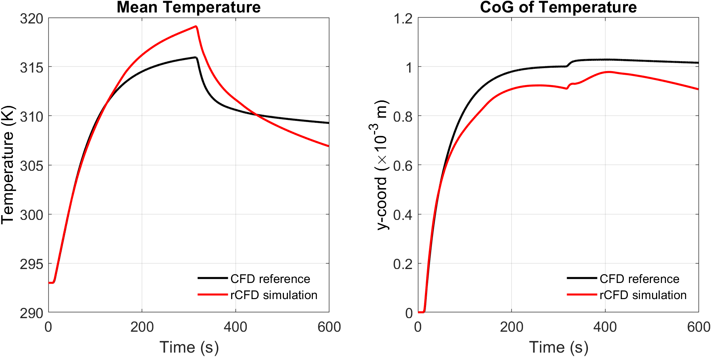
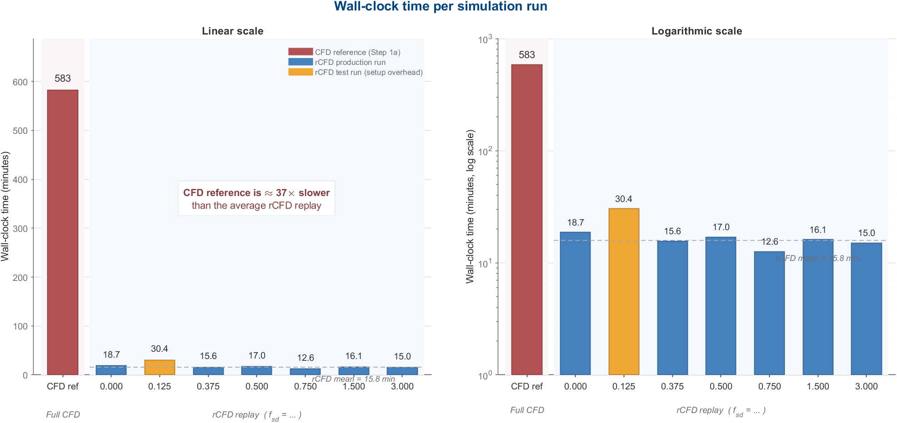
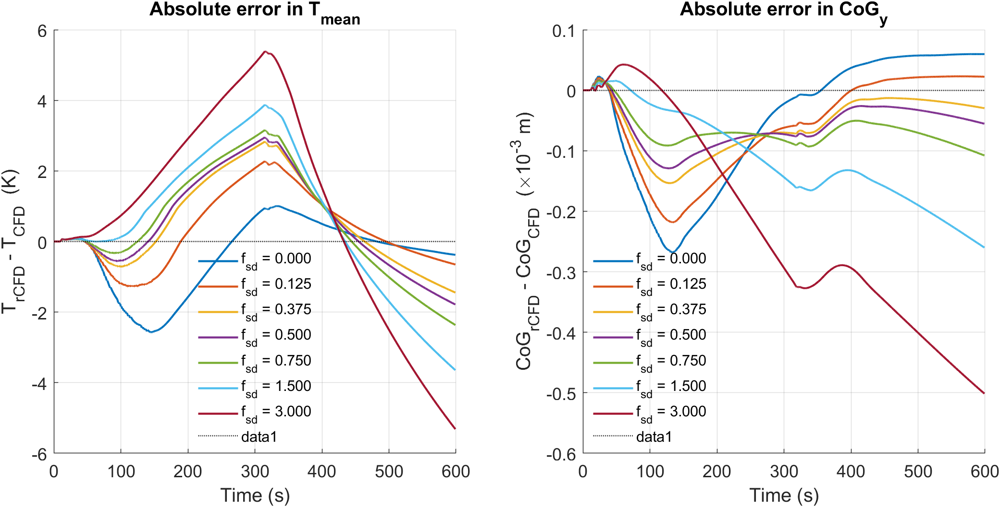
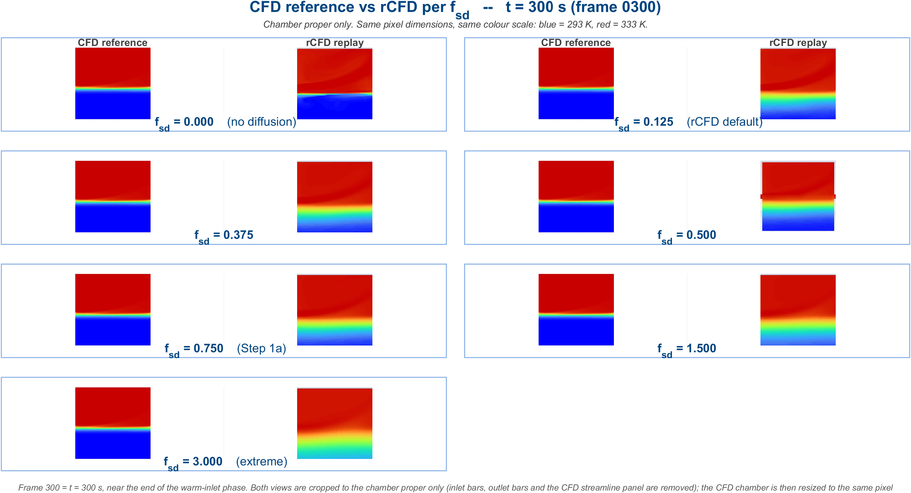

TL;DR
Step 1 sets up the full ANSYS Fluent workflow on Windows 11 for a buoyant-jet test case, runs a turbulent CFD reference (k-$\omega$ SST), builds a recurrence-CFD (rCFD) database from it, and then replays that database to reproduce the temperature transport at a fraction of the original cost. We then sweep seven values of the rCFD mixing parameter $f_{sd}$. The best value depends on the metric: $f_{sd}=0.000$ gives the best mean temperature, while $f_{sd}=0.500$ gives the best thermal stratification ($CoG_y$).
This page brings together Step 1a (the workflow) and Step 1b (the parameter sweep). It explains the buoyant-jet problem, how rCFD works, what each $f_{sd}$ value does to the temperature field, and what we would suggest for Step 2.
1 — Background
Running a full CFD simulation for a long time is expensive. The flow itself settles into a repeating pattern within a few seconds, but the things we care about (heat, mixing, stratification) may need minutes or hours to develop. Doing a full Navier-Stokes solve for that long is wasteful.
Recurrence CFD (rCFD), introduced by Lichtenegger and Pirker in 2016 [1], uses this repetition. After a short CFD run, the velocity field is saved as a database of cell-to-cell (C2C) shift patterns. The temperature is then moved through the chamber by applying these saved patterns over and over again. No Navier-Stokes solve is needed during this replay phase.
The catch is that the C2C shifts only move things around; they do not mix anything. To bring back the missing mixing we need a small diffusion step, controlled by one dimensionless number: the face-swap diffusion $f_{sd}$. This page shows how we built the workflow (Step 1a) and how we then tuned $f_{sd}$ (Step 1b).
2 — The Buoyant-Jet Test Case
The test case is a closed rectangular tank filled with water at $293$ K. A small horizontal jet enters at mid-height. From $t=0$ to $t=315$ s the jet is warm ($T_\text{high}=333$ K); after $t=315$ s it switches back to cold. The warm water is lighter than the cold water, so it rises to the top of the tank and a vertical thermal layer builds up.
We follow the temperature field with two numbers:
- The average temperature $T_\text{mean}(t)$, which tells us how much heat is in the tank.
- The vertical centre of gravity of the heat $CoG_y(t)$, which tells us how high or low the warm fluid sits.
Both values are written to rCFD_temperature.out at every rCFD step, and the same numbers are computed for the CFD reference.

3 — rCFD in a Nutshell
rCFD has two phases: preparation (run a short CFD, save the flow patterns) and replay (use those saved patterns to push the temperature around). The diagram below shows the whole pipeline at a glance — the animated dots illustrate how data flows between the steps.
3.1 — Preparation: building the C2C database
During preparation, the CFD solver writes, at every saved frame, a small list that says: "the fluid in cell $i$ moved into cell $j$ during this time step". This list is called the cell-to-cell (C2C) shift map. The database is just many of these maps, taken from the repeating regime of the CFD run.
3.2 — Replay: moving the temperature
During replay, rCFD picks a frame from the database and uses its C2C map to move the temperature field one step. This shifts warm and cold pockets across the tank, but it never solves the Navier-Stokes equations again.
The shift only moves things; it does not mix them. So a pure C2C replay would give an unrealistically sharp boundary between warm and cold zones. The next section shows how rCFD adds the missing mixing.
4 — Face-Swap Diffusion
After each C2C shift, rCFD walks over every internal face and moves a small amount of heat between the two neighbouring cells. This is the face-swap diffusion operator, first proposed by Pirker and Lichtenegger in 2018 [2] under the name "global balance safety belt", and later rewritten in a cleaner mathematical form by Lumetzberger et al. in 2025 [3].
It is controlled by two numbers:
face_swap_max_per_loop(default $1/8$): a safety cap on how much volume can move across a face in one sweep.face_swap_diffusion= $f_{sd}$ (set by the user): the total amount of mixing per rCFD time step. If $f_{sd}$ is larger than the cap, the operator splits the work into several sweeps of size $0.125$ each.
For one face between cells $c_0$ and $c_1$ with $T_{c_1} > T_{c_0}$ the operation is:
$$ \Delta T = \frac{T_{c_1} - T_{c_0}}{2} \cdot \min(V_{c_0}, V_{c_1}) \cdot f_\text{loop} $$
$$ T_{c_0} \mathrel{+}= \Delta T, \qquad T_{c_1} \mathrel{-}= \Delta T $$
where $f_\text{loop} = f_{sd}/n_\text{loops}$ is the strength of one sweep.
5 — Step 1a: Workflow on Windows 11
The rCFD tutorial was originally written for Linux. Step 1a takes the same tutorial and makes it run end-to-end on Windows 11 with ANSYS Fluent 2022 R2. The main changes were:
- Replacing Linux shell commands inside the Scheme files with Windows equivalents (
xcopyinstead of a loopedcp, absolute paths with backslashes). - Installing the Visual Studio C++ tools so that Fluent can compile the UDF library at runtime.
- Adding clean-up logic so that the old
libudf_rcfd_run/folder is deleted before every run. Without this, a stale build from a previous crash would be reused. - Fixing an MPI crash that always happened at episode 272 of the replay (it came from a corona-cell sync problem).
- Fixing blank snapshots: the contour plot had to be drawn before saving the frame.
After these fixes the full workflow runs in about thirty minutes on a four-core laptop: roughly fifteen minutes for the CFD reference, and fifteen minutes for the rCFD replay (600 episodes).

5.1 — First rCFD replay at $f_{sd} = 0.75$
For the first replay we used $f_{sd} = 0.75$, the value Prof. Pirker had picked. The rCFD curves follow the CFD curves in shape, but $T_\text{mean}$ sits clearly above the reference. That offset is what motivated Step 1b: instead of guessing the right value of $f_{sd}$, we decided to sweep it.

6 — Step 1b: The Parameter Sweep
Step 1b uses seven values of $f_{sd}$ that cover more than two orders of magnitude. The CFD reference and the C2C database stay the same for every case — only the rCFD replay (and its UDF library) is rebuilt with the new value.
| Case | $f_{sd}$ | Inner sweeps | Role in the sweep |
|---|---|---|---|
| 1 | 0.000 | 1 | Pure C2C shift, no mixing |
| 2 | 0.125 | 1 | rCFD source default |
| 3 | 0.375 | 3 | Moderate mixing |
| 4 | 0.500 | 4 | Intermediate value around the optimum |
| 5 | 0.750 | 6 | Step 1a value |
| 6 | 1.500 | 12 | Strong mixing |
| 7 | 3.000 | 24 | Extreme mixing (expected to over-smooth) |
Three PowerShell scripts under step1b/ handle the edit-recompile-run-archive loop, so that one case never overwrites another. The full seven-case sweep took just over two hours of wall-clock time. The CFD reference itself took 9 h 43 min, so rCFD is roughly 37 times faster than CFD on this case.

7 — Quantitative Results
For every case we put the rCFD trace on the CFD time grid and compute five standard error metrics, following Hyndman and Koehler [4]: signed bias, MAE, RMSE, error standard deviation, and the maximum absolute error.
7.1 — Mean temperature errors
| $f_{sd}$ | Bias (K) | MAE (K) | RMSE (K) | Max abs (K) |
|---|---|---|---|---|
| 0.000 best | −0.377 | 0.761 | 1.076 | 2.569 |
| 0.125 | +0.340 | 0.852 | 1.080 | 2.278 |
| 0.375 | +0.556 | 1.062 | 1.360 | 2.834 |
| 0.500 | +0.572 | 1.147 | 1.459 | 2.955 |
| 0.750 | +0.575 | 1.297 | 1.634 | 3.162 |
| 1.500 | +0.630 | 1.726 | 2.142 | 3.879 |
| 3.000 | +0.899 | 2.512 | 3.045 | 5.394 |
7.2 — Centre-of-gravity errors
| $f_{sd}$ | Bias (mm) | MAE (mm) | RMSE (mm) | Max abs (mm) |
|---|---|---|---|---|
| 0.000 | −0.046 | 0.087 | 0.116 | 0.268 |
| 0.125 | −0.057 | 0.071 | 0.097 | 0.218 |
| 0.375 | −0.057 | 0.059 | 0.074 | 0.154 |
| 0.500 best | −0.059 | 0.060 | 0.069 | 0.129 |
| 0.750 | −0.066 | 0.068 | 0.072 | 0.108 |
| 1.500 | −0.112 | 0.114 | 0.137 | 0.260 |
| 3.000 | −0.223 | 0.231 | 0.281 | 0.501 |
Two things jump out. First, the $T_\text{mean}$ error always gets smaller as $f_{sd}$ goes down — the best mean-temperature case is the no-mixing case, $f_{sd}=0$. Second, the $CoG_y$ error has a real minimum in the middle of the sweep, at $f_{sd}=0.500$, which is slightly better than the next-best values $0.750$ and $0.375$.

8 — Visual Comparison
8.1 — CFD reference vs rCFD per case
Figure 7 pairs the CFD reference contour with each rCFD case at the same moment, $t=300$ s. All panels use the same colour scale and are cropped to the chamber only, so the comparison is as direct as it can be.

8.2 — Pick one case, compare against the CFD reference
Drag the slider below (or click a tick label) to pick an $f_{sd}$ value. The right-hand panel switches to that case while the left-hand panel keeps showing the CFD reference. Both panels play together on the same timeline as the gallery below, so the scrubber controls everything at once.
8.3 — Synchronised animation gallery
The eight clips below all play the same $600$ s of simulated time at $15$ fps. The scrubber controls all of them at the same time, so you can pause at any moment and compare what every case looks like side by side. The CFD reference is shown first, then the seven rCFD cases in order of $f_{sd}$.
9 — Discussion
9.1 — Why the best value depends on the metric
$T_\text{mean}$ is just an average over the whole volume; it does not care where the warm fluid sits. Face-swap diffusion conserves mass, but it also speeds up how fast the warm inlet spreads through the chamber. The real CFD needs finite time for advection to do this; rCFD with a high $f_{sd}$ does it almost instantly. As a result, rCFD ends up hotter than CFD during the warm phase, and the higher $f_{sd}$ is, the bigger this overshoot becomes. So the best case for $T_\text{mean}$ is $f_{sd}=0$.
$CoG_y$ measures where the warm region sits in height. Without any face-swap mixing, the rCFD field stays too sharp and the centre of gravity sits too high. With too much mixing, it sits too low. The best value is the one that matches the small-scale mixing in the CFD reference that the shift map alone cannot reproduce. In our sweep that value is $f_{sd}=0.500$.
9.2 — How sure are we?
The margin at the $CoG_y$ optimum is small: $0.069$ mm at $f_{sd}=0.500$ against $0.072$ mm at $f_{sd}=0.750$ and $0.074$ mm at $f_{sd}=0.375$, which is about four percent. The minimum is real, but it is also shallow. Any value in the range $[0.375, 0.750]$ would be defensible if there were a separate reason to prefer it.
10 — Outlook: Step 2
Step 2 adds heat loss through the chamber walls. The wall heat flux is
$$ q_\text{wall}(x, y, z, t) = h \bigl( T_\text{wall}(x, y, z, t) - T_\infty \bigr) $$
so it depends directly on the temperature in the near-wall cells. Heat loss is sensitive to whether the warm fluid sits at the top or has come down, which is exactly what $CoG_y$ measures. For that reason, $f_{sd}=0.500$ looks like a good starting value for Step 2. A small confirmation sweep around $\{0.375, 0.500, 0.750\}$ would then check that the optimum does not move once heat loss is active. The final choice, of course, is up to Prof. Pirker.
Two longer-term ideas are also worth keeping in mind:
- Local diffusion. Switching from the global $f_{sd}$ to the per-cell Fickian path (
local_diff_on = 1) would replace a dimensionless knob with a physical diffusion coefficient, as discussed by Abbasi et al. [5] and Lumetzberger et al. [3]. It needs a per-celllocal_difffield that has to be written during the rCFD preparation phase. - Database reuse. The current C2C database only knows the adiabatic flow patterns. It does not contain the cold down-flows along the walls that wall heat loss would create. Whether the existing database is still good enough for Step 2, or whether we need to rebuild it, is something Step 2 itself will have to answer.
References
- T. Lichtenegger and S. Pirker, Recurrence CFD — a novel approach to simulate multiphase flows with strongly separated time scales, Chemical Engineering Science 153, 394–410 (2016).
- S. Pirker and T. Lichtenegger, Efficient time-extrapolation of single- and multiphase simulations by transport-based recurrence CFD (rCFD), Chemical Engineering Science 188, 65–83 (2018). §2.4 introduces the face-swap diffusion operator under the name "global balance safety belt".
- H. Lumetzberger, S. Pirker and T. Lichtenegger, Propagator-moments approximation for recurrence CFD: application to species transport in turbulent flows, Chemical Engineering Science 311, 121624 (2025). Modern propagator-theoretic derivation of the face-swap operator.
- R. J. Hyndman and A. B. Koehler, Another look at measures of forecast accuracy, International Journal of Forecasting 22(4), 679–688 (2006). Standard reference for the bias, MAE, RMSE error metrics used here.
- S. Abbasi, S. Pirker and T. Lichtenegger, Application of recurrence CFD (rCFD) to species transport in turbulent vortex shedding, Computers and Fluids 196, 104348 (2020). Source of the $D_\text{rec} = D + D_\text{sgs}$ decomposition motivating the local-diffusion path.
- ANSYS Inc., ANSYS Fluent Theory Guide, Release 2022 R2, Canonsburg, PA (2022).
- F. R. Menter, Two-equation eddy-viscosity turbulence models for engineering applications, AIAA Journal 32(8), 1598–1605 (1994). Original k-$\omega$ SST model used to produce the CFD reference.
- Particulate Flow Modelling, JKU Linz, rCFDreloaded source code, internal repository (2026). Implementation reference for the face-swap operator (
src/rCFD_swap.h).